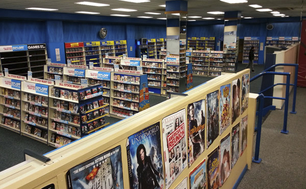
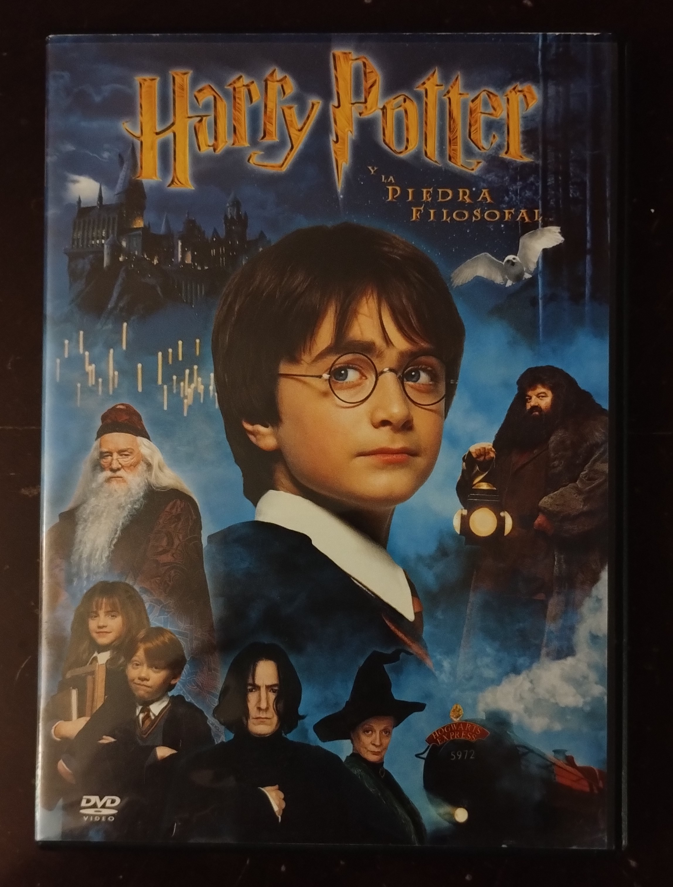
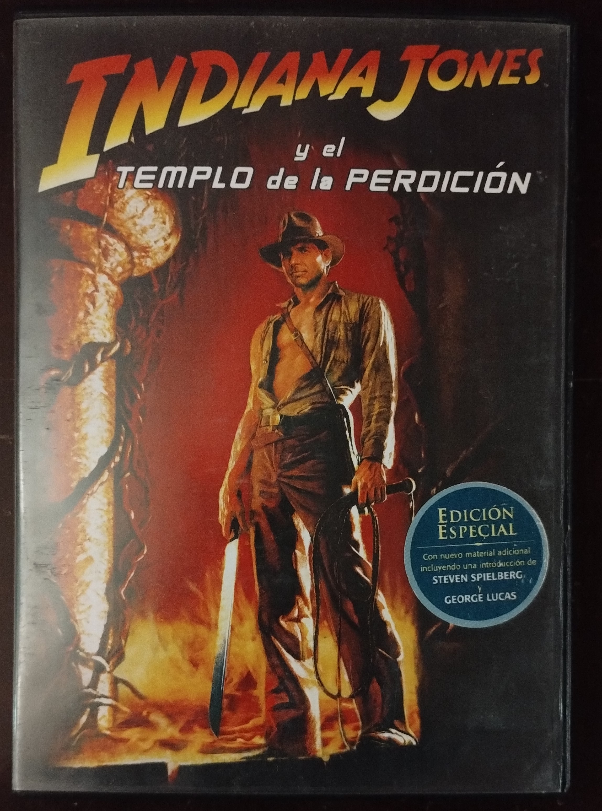
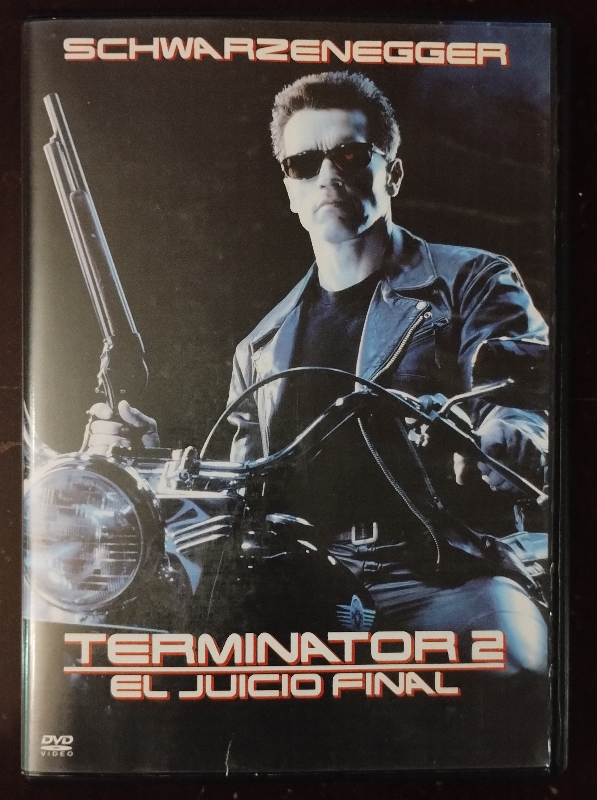
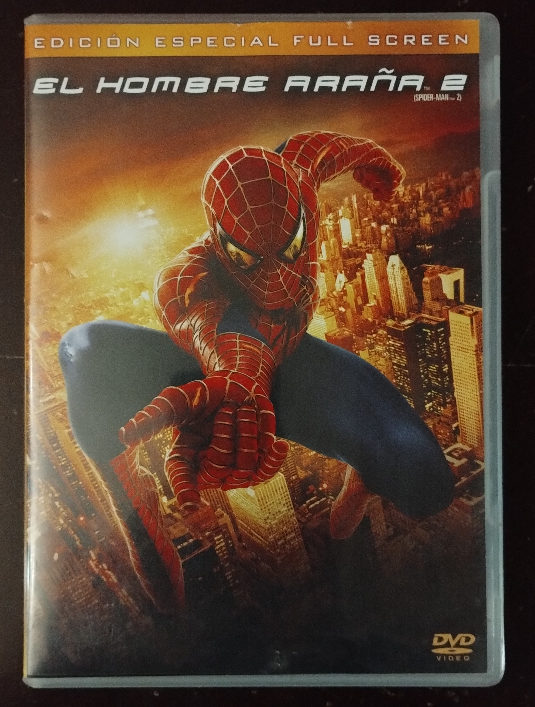
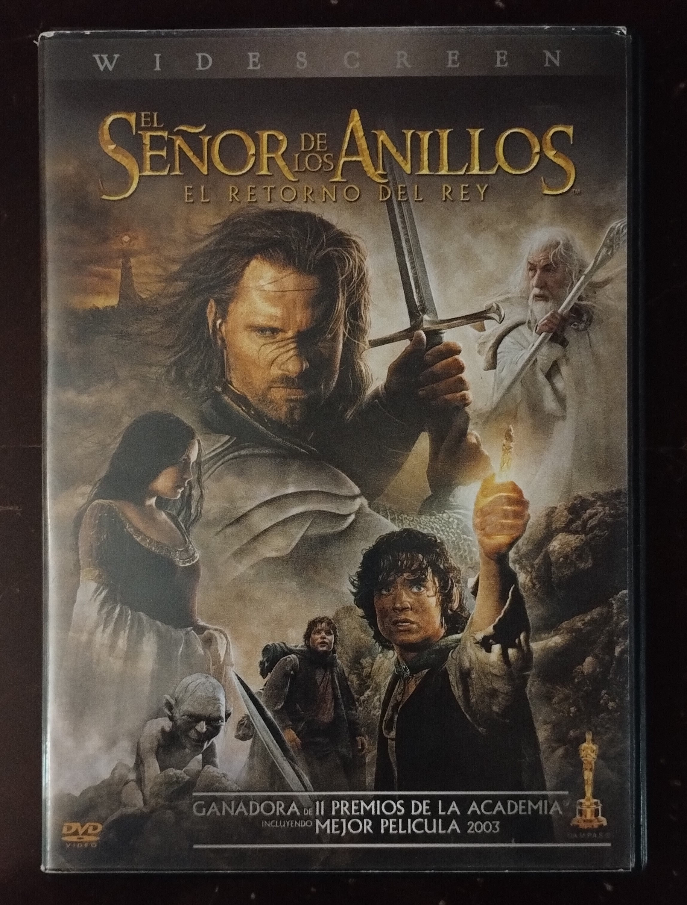

Esta galeria consiste en una colección de peliculas propias en formato fisico DVD, pertenecientes a decadas pasadas.
Cada pelicula estara acompañada de una breve descripcion junto a una ficha tecnica con información detallada.
¡Disfruta de esta experiencia retro!





¡Haz clic en las imagenes para ver más detalles!